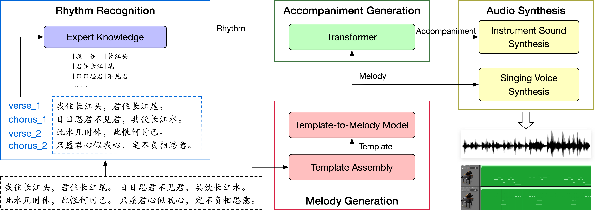

Demos for paper 《LingGe: An Automatic Ancient Chinese Poem-to-Song Generation System》
Paper
LingGe: An Automatic Ancient Chinese Poem-to-Song Generation System
Authors
Yong Shan, Jinchao Zhang, Huiying Ren, Yao Qiu, Jie Zhou
Abstract
This paper presents a novel system, named LingGe ("伶歌" in Chinese), to generate
songs for ancient Chinese poems automatically.
LingGe takes the poem as the lyric, composes music conditioned on the lyric, and finally outputs
a full song including the singing and the accompaniment.
It consists of four modules: rhythm recognition, melody generation, accompaniment generation,
and audio synthesis.
Firstly, the rhythm recognition module analyzes the song structure and rhythm according to the
poem.
Secondly, the melody generation module assembles the rhythm into the template and then generates
the melody.
Thirdly, the accompaniment generation module predicts the accompaniment in harmony with the
melody.
Finally, the audio synthesis module generates singing and accompaniment audio and then mixes
them to obtain songs.
The results show that LingGe can generate high-quality and expressive songs for ancient Chinese
poems, both in harmony and rhythm.

Song Samples
卜算子·我住长江头（李之仪）
我住长江头
，
君住长江尾
。
日日思君不见君
，
共饮长江水
。
此水几时休
，
此恨何时已
。
只愿君心似我心
，
定不负相思意
。
English Translation
I live where the Yangtze begins,
You live where the Yangtze comes to its end;
Day after day I long for you yet I see you not,
Though we the Yangtze's waters share.
When shall the waters run dry?
When shall this regret come to an end?
I only hope that your heart is like mine,
And disappoint not our mutual wistful affections.
Melody
Singing + Accompaniment
虞美人·春花秋月何时了（李煜）
春花秋月何时了
，
往事知多少
。
小楼昨夜又东风
，
故国不堪回首月明中
。
雕栏玉砌应犹在
，
只是朱颜改
。
问君能有几多愁
，
恰似一江春水向东流
。
English Translation
When will there be no more autumn moon and spring flowers
For me who had so many memorable hours?
The east wind blew again in my garden last night.
How can I bear the cruel memory of bowers
And palaces steeped in moonlight!
Carved balustrades and marble steps must still be there,
But rosy faces cannot be as fair.
If you ask me how much my sorrow has increased,
Just see the over brimming river flowing east!
When did the bright moon come to be?
I raise my drink to ask the azure sky.
I wonder about the palace and edifices in heaven,
What year of which age do they go by tonight?
I'd like to ride the wind to there visit and return,
Yet I fear where such grand and fine architecture is
Must be unbearably cold because of its height.
So I turn to dance among distinct light and shade,
How it must appear beyond the promise of earthly delights.
Soon the moon glides behind the red high-rise,
And through the decorated window of the wakeful it shines.
I know I shouldn't agonise over it,
Yet why does the moon always fuller seem at parting times?
Life is full of happy reunions and parting sorrows,
And the moon waxes and wanes in size.
Nothing is ever perfect since the beginning of time.
May we continue to survive life,
So that we could the moon's loveliness share when separated by thousands of miles.
The great gushing Yangtze with piling waves flows towards the east,
Away it carries gallant souls of the remote bygone days.
The ancient fort on the west is said to be
The Crimson Cliff, where Zhou of the Three Kingdoms era Wei's navy defeated.
Stones were hurled into the sky indiscriminatingly,
Mighty waves must have crushed onto shores hurling high snow-like foam.
The river and mountains today's landscapes paint,
Where once there were many courageous and heroic men.
Picture Zhou in his prime,
Dressed in plain clothes together with his young bride, gallant he must have been.
Topped with a silk crest, he held in his hand a fan of feathers,
With humour he helped see to
That the masts and sculls of Wei's navy go up in smoke and ashes turn into.
My mind wanders in the history vested hither,
My sentimentality no doubt has caused my early grey.
Life is a dream,
Allow me to libate a drink to the river, the moon and its reflection.
Melody
Singing + Accompaniment
虞美人·听雨（蒋捷）
少年听雨歌楼上
，
红烛昏罗帐
。
壮年听雨客舟中
，
江阔云低
，
断雁叫西风
。
而今听雨僧庐下
，
鬓已星星也
。
悲欢离合总无情
，
一任阶前
，
点滴到天明
。
English Translation
In my youth I listened to the rain in houses where singing pervaded,
Surrounded by bed curtains that candlelight veiled.
In my prime I listened to the rain as I travelled by boat,
The river was vast and clouds low, in westerlies trilled wild geese lost on their way.
These days I listen to the rain in the hut of a monk,
My sideburns have turned sparkling grey.
Ever so relentless are the joy of coming together and parting sorrows that follow,
Here I am taking heed of the rain dribbling on the stairs as a new day breaks.
Melody
Singing + Accompaniment
丑奴儿·书博山道中壁（辛弃疾）
少年不识愁滋味
，
爱上层楼
。
爱上层楼
，
为赋新词强说愁
。
而今识尽愁滋味
，
欲说还休
。
欲说还休
，
却道天凉好个秋
。
English Translation
In my younger days, I had tasted only gladness,
But loved to mount the top floor,
But loved to mount the top floor,
To write a song pretending sadness,
And now I’ve tasted Sorrow’s flavors, bitter and sour,
And can’t find a word,
And can’t find a word,
But merely say，“what a golden autumn hour！”
Easterlies of the night call to bloom blossoms of a thousand trees,
As if blowing adrift stars that drizzle like rain.
Precious horses and lavish carriages go by leaving a scented trail.
Phoenix flutes music perform as the timekeeper witnesses the turning of hours,
Throughout the night lanterns in the shape of fish and dragons dance and gyrate.
Golden are the willowy tassels of her butterfly hairpin,
Among giggles and chatters her scent is fading away.
In the crowd I look for her presence everywhere time and again,
Suddenly I turn around, and I see her there,
Where lights are dim and faint.
Ten years of separation by the immeasurable distance between life and death
Is not something I'd like to think about, yet unforgettable it is already.
A thousands miles away is your lonely grave,
I've nowhere to visit and my grief express.
Even if we could meet, we probably wouldn't each other recognise,
For my faces has aged and my sideburns greyed as I have life's hardship sustained.
Last night out of the blue I dreamt of homecoming,
And there you were, putting on make-up after combing your hair.
Our eyes meet yet reticent we remained,
Yet rolling down our cheeks are tears forming far too many trails.
Then I realise we are where I'd visit year after year when my heart aches,
On a night with a bright moon, on the hillock, among the pine saplings I'd stay.
Melody
Singing + Accompaniment
临江仙·滚滚长江东逝水（杨慎）
滚滚长江东逝水
，
浪花淘尽英雄
。
是非成败转头空
。
青山依旧在
，
几度夕阳红
。
白发渔樵江渚上
，
惯看秋月春风
。
一壶浊酒喜相逢
。
古今多少事
，
都付笑谈中
。
English Translation
Wave on wave the long river eastward rolls away;
Gone are all heroes with its spray on spray.
Success or failure, right or wrong, all turn out vain;
Only green mountains still remain
To see the setting sun’s departing ray.
The white-haired fishermen sail on the stream with ease,
Accustomed to the autumn moon and vernal breeze.
A pot of wine in hand, they talk as they please.
How many things before and after
All melt into gossip and laughter!
Melody
Singing + Accompaniment
醉花阴·薄雾浓云愁永昼（李清照）
薄雾浓云愁永昼
，
瑞脑销金兽
。
佳节又重阳
，
玉枕纱厨
，
半夜凉初透
。
东篱把酒黄昏后
，
有暗香盈袖
。
莫道不销魂
，
帘卷西风
，
人比黄花瘦
。
English Translation
A light mist and dense clouds shroud a long day in melancholy,
The fragrance of an exquisite essence scatters from the gilded beast-shaped burner.
Come again has the season of the Double Ninth,
Through the silk drapes and the embroidered pillow
Chilliness begins to penetrate in the middle of the night.
I sip at my wine by the east fence past the twilight,
I chrysanthemums and their subtle scent keep in my sleeves.
How could anyone not agree that this is soul lifting?
Yet when a westerly raises the screen,
I realise I have withered thinner than those yellow petals and leaves.
Melody
Singing + Accompaniment
卜算子·咏梅（陆游）
驿外断桥边
，
寂寞开无主
。
已是黄昏独自愁
，
更着风和雨
。
无意苦争春
，
一任群芳妒
。
零落成泥碾作尘
，
只有香如故
。
English Translation
Outside the roadhouse by the Parted Bridge,
In loneliness bloom wild blossoms.
Sunset has arrived as I dwell in melancholy in solitude.
Weathering wind and rain.
I have no intention to spring hold onto,
I'll leave jealousy for various flowers to endure.
As blossoms fall to the ground and dust turn into,
There leaves only fragrances that doesn't change.
Melody
Singing + Accompaniment
浣溪沙·一曲新词酒一杯（晏殊）
一曲新词酒一杯
，
去年天气旧亭台
。
夕阳西下几时回
。
无可奈何花落去
，
似曾相识燕归来
。
小园香径独徘徊
。
English Translation
As I new verses compose to a melody with spirits in a grail,
By the lagoon the terrace is the same as before in last year's weather,
Who could turn around the sun that has set in the west?
Powerless are flowers that must wither and fall,
It's time for the return of swallows that I seem to have met before,
Alone I am in the garden pacing paths lined with fallen petals.
Melody
Singing + Accompaniment
生查子·元夕（欧阳修）
去年元夜时
，
花市灯如昼
。
月上柳梢头
，
人约黄昏后
。
今年元夜时
，
月与灯依旧
。
不见去年人
，
泪湿春衫袖
。
English Translation
Last year on lunar festive night,
Lanterns’ mid blooms shone as daylight.
The moon rose atop willow tree;
My lover had a tryst with me.
This year on lunar festive night,
Moon and lanterns still shine as bright.
But where’s my lover of last year?
My sleeves are wet with tear on tear.
Melody
Singing + Accompaniment
蝶恋花·庭院深深深几许（冯延巳）
庭院深深深几许
，
杨柳堆烟
，
帘幕无重数
。
玉勒雕鞍游冶处
，
楼高不见章台路
。
雨横风狂三月暮
，
门掩黄昏
，
无计留春住
。
泪眼问花花不语
，
乱红飞过秋千去
。
English Translation
Deep, deep the courtyard where he is, so deep
It’s veiled by smoke-like willows heap on heap,
By curtain on curtain and screen on screen.
Leaving his saddle and bridle, there he has been
Merry-making. From my tower he can’t be seen.
The third month now, the wind and rain are raging late,
At dusk I bar the gate,
But I can’t bar in spring.
My tearful eyes ask flowers but they fail to bring
An answer. I see blossoms fall beyond the swing.
Melody
Singing + Accompaniment
鹊桥仙·纤云弄巧（秦观）
纤云弄巧
，
飞星传恨
，
银汉迢迢暗度
。
金风玉露一相逢
，
便胜却人间无数
。
柔情似水
，
佳期如梦
，
忍顾鹊桥归路
。
两情若是久长时
，
又岂在朝朝暮暮
。
English Translation
Clouds float like works of arts, stars shoot with grief at heart. Across the Milky Way the
Cowherd meets the Maid. When Autumn’s Golden Wind embraces Dew of Jade, all the love scenes on
earth, however many, fade.
Their tender love flows like a stream; their happy date seems but a dream. How can they bear a
separate homeward way? If love between both sides can last for aye, why need they stay together
night and day?
Melody
Singing + Accompaniment
蝶恋花·伫倚危楼风细细（柳永）
伫倚危楼风细细
，
望极春愁
，
黯黯生天际
。
草色烟光残照里
，
无言谁会凭阑意
。
拟把疏狂图一醉
，
对酒当歌
，
强乐还无味
。
衣带渐宽终不悔
，
为伊消得人憔悴
。
English Translation
Long I stand on a high-rise in the gentle breeze,
Saddened is spring everywhere I see, the sky is vast yet overcast, all round is bleak.
In the remains of the day, in the hazy light the green of grass dims,
Against a rail I lean, yet who can through my quiescence my melancholy read.
I'd rather pretend to be a giddy eccentric looking to get tipsy,
When there is wine, singing follows, yet bland would be such imposed recreation.
Becoming loose are my clothes yet I regret not,
For I languish and suffer for her willingly.
The sky is blue with clouds, the ground covered in leaves yellowed,
To the water's edge spread autumn colours, cold mist hovers over green waters.
The setting sun reflects off mountain ranges, the sky and waters a picture paint,
Grass feels not, more of it grows beyond the setting sun like uninhibited nostalgia.
Drowning in homesickness, depressed by my time on the road,
Sleepless are nights, unless sweet dreams find me to some rest provide.
Leaning over railings atop a tower to the moon admire is not for those alone,
For a drink of spirits down a saddened soul makes wistful tears flow.
Melody
Singing + Accompaniment
一剪梅·红藕香残玉簟秋（李清照）
红藕香残玉簟秋
。
轻解罗裳
，
独上兰舟
。
云中谁寄锦书来
，
雁字回时
，
月满西楼
。
花自飘零水自流
。
一种相思
，
两处闲愁
。
此情无计可消除
，
才下眉头
，
却上心头
。
English Translation
Fragrant pink lotus fade; autumn chills mat ofjade.
My silk robe doffed, I float
Alone in orchid boat,
Who in the cloud would bring me letters inbrocade?
When swans come back in flight,
My bower’ S steeped in moonlight.
As fallen flowers drift and water runs their way.
One longing overflows
Two places with same woes.
Such sorrow can by no means be driven away.
From eyebrows kept apart,
Again it gnaws my heart.
Melody
Singing + Accompaniment
浪淘沙令·帘外雨潺潺（李煜）
帘外雨潺潺
，
春意阑珊
。
罗衾不耐五更寒
。
梦里不知身是客
，
一晌贪欢
。
独自莫凭栏
，
无限江山
。
别时容易见时难
。
流水落花春去也
，
天上人间
。
English Translation
The curtain cannot keep out the patter of rain,
Springtime is on the wane.
In the deep of the night my quilt is not cold-proof.
Forgetting I am under hospitable roof,
Still in my dream I seek for pleasures vain.
Don’t lean alone on the railings and
Yearn for the boundless land!
To bid farewell is easier than to meet again.
With flowers fallen on the waves spring’s gone amain,
So is the paradise of men.
Melody
Singing + Accompaniment
玉楼春·尊前拟把归期说（欧阳修）
尊前拟把归期说
，
欲语春容先惨咽
。
人生自是有情痴
，
此恨不关风与月
。
离歌且莫翻新阕
，
一曲能教肠寸结
。
直须看尽洛城花
，
始共春风容易别
。
English Translation
In front of wine I’ll tell you of my parting day;
Your vernal face dissolves in tears before I say.
Lovers are born with sentimental feeling heart;
Nor moon nor wind has taken in their grief a part.
Don’t set to a new tune the parting song!
The old has tied our hearts in knots for long.
Until we have seen all flowers on the trees,
It’s hard to bid goodbye to vernal breeze.
Melody
Singing + Accompaniment
木兰花·拟古决绝词柬友（纳兰性德）
人生若只如初见
，
何事秋风悲画扇
。
等闲变却故人心
，
却道故人心易变
。
骊山语罢清宵半
，
泪雨霖铃终不怨
。
何如薄幸锦衣郎
，
比翼连枝当日愿
。
English Translation
If life could be all the same
As when I knew your name,
Why would the wind waul
For the fan forsaken in Fall?
Without rime or reason told
His heart went stone-cold.
But he said without shame,
"The Fickleness is to blame."
Upon Mount Li of mid-night
They did their troth plight;
Till death she's ne'er loath'd
The man in fine robes cloth'd.
"May we be a pair of Birds,"
To her he's given his words,
Words said with love so deep,
Yet he finally failed to keep.